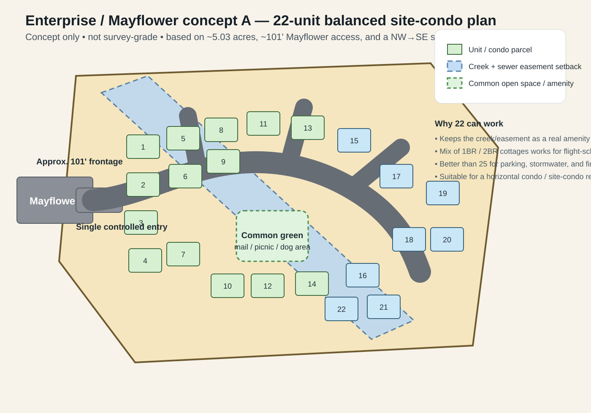
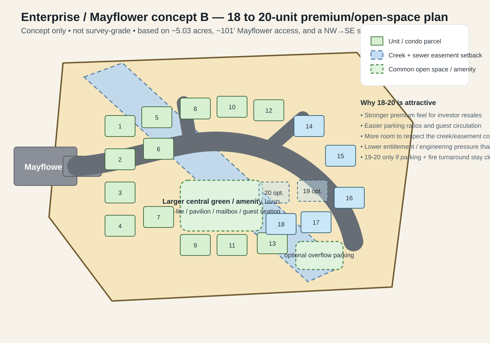

Not survey-grade. Built from the rough plat dimensions, Mayflower access note, and the NW-to-SE sewer easement/creek corridor you described.
Balanced density with one controlled entry, a central green, and the creek/easement preserved as a linear common element.

Lower-density / more premium feel with extra open space, easier parking, and optional pads 19-20 only if engineering stays clean.
